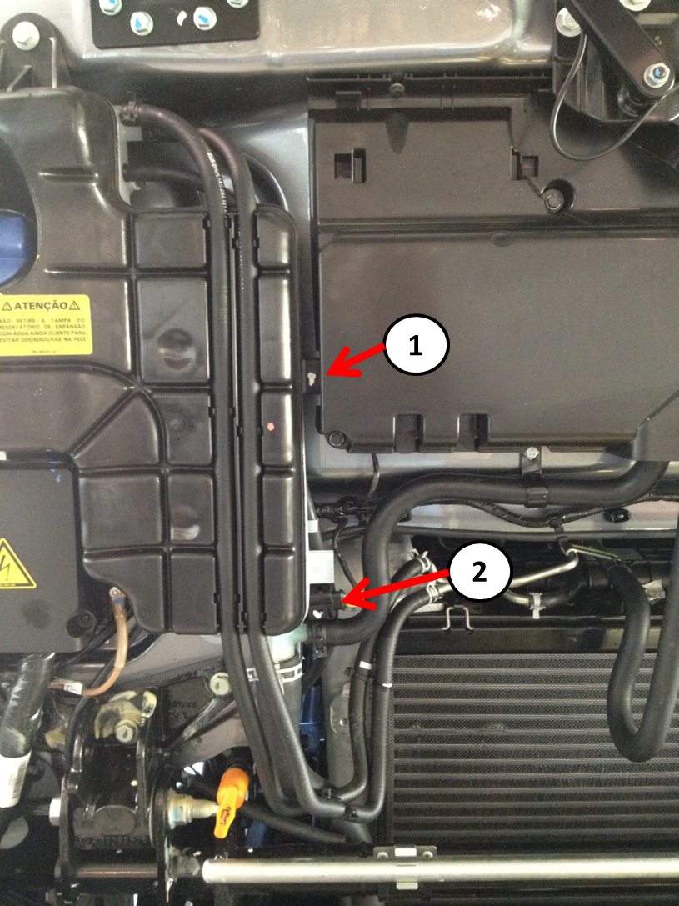

|

1- Sensor nível baixo.
2- Sensor nível vazio.
Descrição da Falha
Sinal do sensor de nível do líquido de arrefecimento vazio,
sinal muito baixo.
Indicação de Falha
Luz de alerta acende constantemente com
os símbolos
e e
ativa o alarme sonoro agudo pulsante, com o veículo andando ou parado.
Estratégia de Monitoramento
O
módulo monitora o circuíto dos sensores do líquido de arrefecimento baixo e vazio.
Efeito da Falha Não há efeito previsto para esta falha.
Possíveis Falhas
FMI 2: Sinal muito baixo.
Aviso
  Não há
aviso específico para este código. Não há
aviso específico para este código.
Registros de Falhas em Outros
Módulos de Comando
Sim, na LU (Unidade Lógica).
Considerar os esquemas
elétricos do veículo
| Verificação
|
Medição |
Eliminação da
Falha |
|
Circuíto nível do líquido de arrefecimento para a
PTM (Power Train Manager)
|
Continuidade
do circuito:
- Sensor de nível baixo pino A1 para E-Rack F pino 12
- Sensor de nível baixo pino A3 para E-Rack F pino 13
- E-Rack F pino 12 para módulo LU pino D4
- E-Rack F pino 13 para módulo LU pino D14
- Módulo LU pino B3 para módulo PTM pino B6
- Sensor de nível vazio pino A1 para E-Rack F pino 14
- Sensor de nível vazio pino A3 para E-Rack F pino 15
- E-Rack F pino 14 para módulo LU pino D5
- E-Rack F pino 15 para módulo LU pino D15
- Módulo LU pino B9 para módulo PTM pino B18
|
– Verificar os cabos
quanto a rompimento ou oxidação.
– Verificar as conexões
quanto a mau contato ou pino torto.
- Verificar se a LU apresenta alguma falha. Caso positivo, proceder conforme descrição da falha. - Caso nenhuma falha
seja verificada, substituir o módulo
PTM (Power Train Manager).
|
|